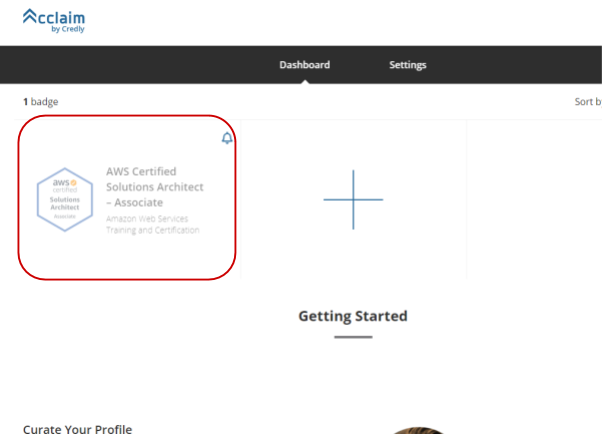
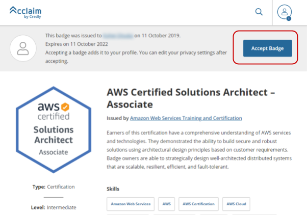
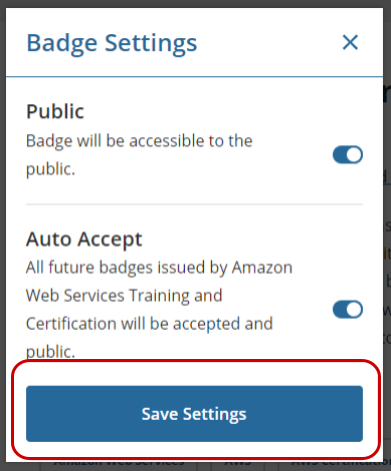
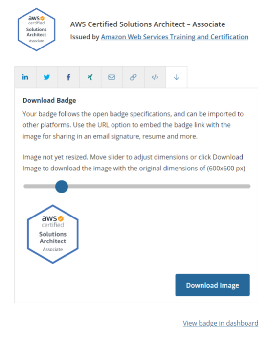

AWS 認定アカウントへのサインインの方法
AWS 認定
にサインイン
サインイン、またはアカウントを作成 では「APNパートナーの方はこちら」側でサインイン
"AWS 認定" ページに戻される（ハズ）ですが、その時に「おかえりなさい。」が出ていればサインインに成功しています。「アカウントに移動」します。
デジタルバッジ（新）の有効化方法
"AWS 認定アカウント" の上部メニューで「デジタルバッジ（新）」をクリック
「CredlyのAcclaimプラットフォーム」をクリック
"Create your Acclaim account" で Country (= Japan) と Password (新規に作成) を入力して「Create Account」をクリック
1password へ登録する際は以下のようにしておくと便利です。
サイト名
Acclaim
ユーザ名
メールアドレス
パスワード
任意で作ってください
ウェブサイト
https://www.youracclaim.com/
Terms and Conditions of Use は「I Accept」
"Dashboard" で🔔がついているカードはデジタルバッジまだ有効化されていない認定です。対象をクリックします。

右上の「Accept Badge」をクリックします。

ダイアログが表示されます。好きに設定してください。（まあ基本的には両方 ON で OK だと思います）

これでデジタルバッジが有効化されました。このページからデジタルバッジが利用できます。 PNG ファイルのダウンロードは「↓」のタブです。

以上で終了です。